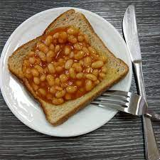

How To Make Beans on Toast

Description
Are you a fan of Beans? If so, you'll absolutely love this recipe that can serve up to 1 person!
Ingredients
Steps
- Empty beans into a bowl
- Put Bowl in microwave for 2 minutes (I think. idk never made them)
- Put bread in toaster until brown and toast like
- Put beans on toast
- mmmm beans